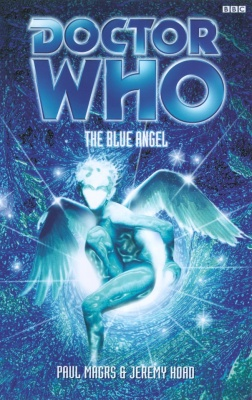

|
The Blue Angel
|
BASIC PLOT DOCTOR COMPANIONS MATERIALISATION CIRCUIT Pg 91 The shopping Mall, but it's now in the Enclave, by Valcea (Pg 92), although later it's near Tyneside (Pg 270). It's not clear whether the Doctor in the Obverse ever materialised, if he ever leaves, if he's the real Doctor or even if he ever existed at all. PREPARATORY READING CONTINUITY REFERENCES "So it's in a kind of S-shape, or, as Fitz has pointed out, a reversed question mark." The question mark logo appeared with increasingly alarming frequency on the clothing of the fifth through seventh Doctors. Pg 3 "The seventh son of a seventh son." This is what, many moons ago, made you a sorcerer. It's not meant literally for the Doctor, no matter how many people have taken it to be so. "The thyme is completely split asunder." This is both a pun on Shakespeare ('This time is out of joint' - Hamlet) and a reference to Iris Wildthyme from The Scarlet Empress et al. Pg 4 "A warped and frangible text that he says is called the Aja'ib" The Scarlet Empress. Pg 5 "I think it was my grandfather who brought that book back from the East." A possible reflection of Susan and the Doctor's relationship. "His private Doctor is an avuncular presence. A deeply lined face and a shock of silvery hair. He wears frilly bow-ties to work, his opera cloak flung on to the consultation couch. A touch of the old Empire about him." The Doctor's Doctor would appear to be a reflection of his third incarnation, possibly as a result of their connection in Interference. "He sings a sort of nursery rhyme - half familiar, terribly exotic." We'd be prepared to bet that it goes (all together now) 'Klokleda partha menin klatch, aroon, aroon, aroon.'" The Curse of Peladon. And it still goes to the tune of God Rest ye merry gentlemen. "He hasn't had an episode in ages." At the time of writing this was entirely true, by nearly ten years. Everything's changed these days, of course. Pg 6 "Their city had black-and-white parquet floors, which the Glass Men's golden chairs couldn't leave at all, because they seemed to run on something akin to static electricity." Sounds familiar. Suspiciously like The Daleks, in fact. "Yet, having foiled their plans that first time - their plans to destroy the Ghillighast, the race with whom they shared their world." Sounds familiar. Suspiciously like the Daleks and the Thals. "Soon he learned that the Valcean Glass Men were working on schemes to make themselves more powerfully mobile, so they could transport their avarice elsewhere." Sounds familiar. Suspiciously like The Dalek Invasion of Earth. Pg 15 "Captain's Log, stardate etc., etc..." Sounds familiar. Star Trek, practically any episode you might care to name. "Computer. Coffee. Hot. Strong. Black." Sounds familiar. Jean-Luc Picard with a change of beverage. "It's not the same since that damn counsellor visited. 'It's more productive to engage with the feelings people have in order to motivate them with respect and sensitivity.'" Sounds familiar. The indescribably irritating Counsellor Troi. Pg 16 "I still get to fire phasers when I want. I still get to fly as fast as I want. I still get to fight hand to hand with whichever warmongering bastard wants to meet up with me - and me alone - planetside, as they so often want to. It's still me. And I definitely get the first choice of the ladies, whatever colour they are. I've got a reputation to keep up." Sounds familiar. Yes, Bob the Bland is actually Captain James T. Kirk. "The desk crew were sitting in their usual semicircle." If we went on with the Trek references, we'd be here all day, not to mention that 'Sounds familiar' would become more irritating than Counsellor Troi. Suffice it to say that there's also a big viewscreen and a plush chair for the Captain and anticipate that from now on we'll only mention similarities of great importance or amusement. Pg 17 "They wouldn't be going to Peladon and its revolting miners and hostaged royal family and VIP Feds or anywhere near it in the foreseeable future." The Monster of Peladon setting at least the Valcea part of the plot in exactly the same time frame. For reference, one of the VIP Feds in question is the Third Doctor. Pg 20 "Two very excitable Alpha Centaurans settled to a game of multidimensional chess." From The Curse of Peladon et al, and the chess might just be what the Doctor was playing at the start of Alien Bodies. "Aboard the Nepotist, Fitz was desperately trying to revert to type." Fitz's desire to be as Fitz-like as possible is due to his reconstruction at the end of Interference, part II. "She had her auburn hair tied back and was wearing an outfit that the Doctor had suggested - a glittering, gauzy affair." This may just be one of Zoe's shiny silver jumpsuits from The Mind Robber amongst others. Pg 23 "It was now an Internet cafe and neither the Doctor nor his friend, Sally, could approve of that." Sally is a clear Sarah Jane analogy. It's possible - although don't quote me on this - that Sally was her 'working title' when the character was being created. Pg 24 "What did she call that Jack Russell again? Something ridiculous. He should remember. He'd bought it for her when it was a puppy, quite some years ago." K9 and Company, if you go with the subtle analogy. "I'll ask Canine. He'll know." And the dog's name is even more of a reason to go with the analogy, if you ask us. Pg 26 "The first half is a story about an arid world. A desert world ruled by a Queen who sits in a vast jar of jam. Don't laugh." In a book about the unreality of things, perhaps we shouldn't be surprised to discover that Sally, our Sarah Jane analogy, is writing The Scarlet Empress. Apparently the publishers are very excited about it. Pg 27 "And the second half of the book is wintry. Like today. It's about an everlasting winter and a city of glass that travels through space." And the second half of her book is, um, The Blue Angel. "- Who's the hero of all this? - There's a woman. But you're in there too." As we suspected, these two books are about Iris Wildthyme. And the Doctor's in there too. Pg 33 "I used to be a lot bigger." The incarnation of Iris Wildthyme that we met in The Scarlet Empress. "The two of us met up, I seem to remember. In the Death Zone." Another reference to the presumably fictional tale of The Seven Irises, a take on The Five Doctors and previously mentioned in The Scarlet Empress. Pg 41 "It will be the step that makes the War inevitable." Not, it turns out, the exciting Time Lord/Enemy war that we have been promised since Alien Bodies and for which we never get a satisfactory explanation or conclusion. Ah well. Pg 42 "Usually, he mused, as he lay in the cold, dry tub, humanoid species invented upright contraptions to beam themselves from: stand on a luminous disk, walk into this cupboard-type contraption and so on." The first is Star Trek, the second in The Seeds of Death. Pg 43 "It's like... the Emerald City! The City on the Edge of Forever!" The Doctor even manages to quote the title of probably the most popular 'Classic' Trek episode ever made, capitalisation and all. Pg 47 "The largest was a green, spined creature that Fitz couldn't put a name to at all. The Doctor, however, could, and he called this lizard Gila." The Scarlet Empress. Pg 66 "Not so long ago Iris had been almost as large and elderly." The Scarlet Empress. Pg 72 "My memory's terribly shaky these days. Especially just lately, I've been..." The after-effects of Interference, part II. And, by the by, just give it another ten books and then talk to us about shaky memories. Pg 73 "There was an en suite bathroom with a verdigrised tub." You can almost hear Magrs writing the line and thinking, 'Ooh, there's a title.' Or, alternatively (and more likely), he knew that was going to be the title of his next book, so he dropped it in here. He mentions the word in The Scarlet Empress as well. Pg 75 "And the three years he had spent in prison on Ha'olam, not all that long ago." Seeing I. "He couldn't depend upon the idea that the TARDIS would always be there to whisk him safely elsewhere." Prefiguring The Shadows of Avalon. "In fact, several times he had been seriously stranded." The obvious one is The Crystal Bucephalus. I'm sure you can think of more. Pgs 75-76 "The image of Marn was replaced suddenly with a series of grainy black-and-white photographs. They were of varying quality and were accompanied by a crackling, shrieking tape recording of many voices raised in anger, gunshots, lasers, and the noise of glass walls coming down. 'Many tapes in the archive have, unfortunately, been wiped.'" In a moment of sheer brilliance, rather than having the Doctor watch a video of his old adventure, as we saw could be done in Zeta Major, for example, the tape has been wiped, so he has to watch a telesnap reconstruction, as we've been kind of doing for years now. Something very similar also occurs in Verdigris. Pg 77 "Hail there, Doctor! Old friend! Beloved! How about a hand down here?" Similar to the first time the Doctor meets Iris in The Scarlet Empress. Pg 79 "He had a bottle opener and he wielded it skilfully to open my bottle of ginger beer." The Doctor has had a funny relationship with ginger beer ever since The Android Invasion. Pg 80 "Time's Champion, my arse." The NAs, and Iris's considered opinion of them. "A virgin, in many ways, Doctor. You were Time's Champion and each new adventure was newer than the last. Your cosmos a dark and complex place. But in the human run of things, in terms of the most vital experiences, you were a virgin." The NAs and their publishing house, and, quite possibly, Paul Magrs' considered opinion of said novels. Pg 81 "Things like the Glass Men of Valcea, the Keys of Marinus, the City of the Damned, the Mad Cacti of Zolpha Thura." The Blue Angel, The Keys of Marinus (obviously), the fourth Doctor comic strip The City of the Damned, Meglos. "I remember being in San Francisco and it was New Year. I kissed a woman in a park." The Telemovie. "Grace, Grace, Grace, she was called." The Telemovie, and a sudden upsurging of the Doctor repeating himself in irritating monosyllables was the last thing we wanted when we thought it had left the TARDIS with Sam Sam Sam Sam Sam in Interference part II. Pg 89 "Fitz strode off to a distant hatstand, where he seemed to remember having seen an incredibly long multicoloured scarf hanging." The Fourth Doctor's scarf, obviously, but see also - albeit mildly - Continuity Cock-Ups. Pg 95 "When she lived with the Doctor - twenty or so years ago" Sally's time with the Doctor, 20 years ago, squares roughly with Sarah Jane's time with him in her timeline. Pg 97 "She plumped up a cushion and found, wedged behind it, down the back of her armchair, a strange-looking electronic device that neither she nor Sally could fathom. It looked like a kind of egg whisk." A Dalek gun. Pg 98 "Do you know this quotation, dear Sally? This line about, beware of treading and trampling all over my dreams?" It's a quote from WB Yeats, for the record. Pg 108 "'I've had to trawl through sewers and nip through cellars without waking Daleks up. I've been locked in warehouses with dinosaurs and I've... I've gone into all kinds of combat with giant spiders... haven't I?' He looked suddenly lost. 'Yes, I'm sure I have...'" Any number of Dalek stories, although given that everything else here is a Pertwee reference, we could assume Planet of the Daleks. The next reference is Invasion of the Dinosaurs and the final one is Planet of the Spiders. His confusion is, naturally, a result of the events of Interference, part II, and is also our first confirmation that the newly-regenerated Fourth Doctor did not return to Earth after his paradoxical regeneration and continue straight on with the Planet of the Spiders story; he must have gone straight into Robot. Pg 113 "When they first thought him up, dragged him dripping and screaming from the deft weft of the Looms." The Doctor's birth, as we saw in Human Nature. And nice use of language in 'deft weft'. "And because he came from that curious (yet unimplicated) race that invented the machines, the stolid wardrobes, that could travel - oh, anywhere, anywhere." The Time Lords, and a presumably deliberate literary reference to The Lion, the Witch and the Wardrobe. Pg 114 "On arid, necromantic, apocryphal Hyspero" The Scarlet Empress. "Daedalus's native universe frowned on mystics and enchantments and put up with them only so long as they explained their doings and to-ing and fro-ing in terms of hard, ho-hum, empirical science." Possibly a response to the objections raised (by me as well) to the unexplained and sudden appearance of magic in the Who universe in The Scarlet Empress. "Daedalus packed his trunk and took himself off to the Enclave." A rather glorious misquoting of Nellie the Elephant. Pg 119 "It was also her private office, in which she conducted her more delicate interviews and kept tied up any prisoners or hostages she had been forced to take." And, accordingly, this is where Sam found Gila in The Scarlet Empress. Pg 120 "and occasional Time's Champion." Despite her earlier comment to the Doctor (which was, admittedly quoted by an Obverse Doctor that later fails to recognise Iris, so not exactly the most reliable source) this is how Iris describes herself. The concept of Time's Champion dates back to Love and War. "And very old flame of your precious Doctor." A reference to the first appearance of Iris in the short story 'Old Flames', from Short Trips. Mention of Sam, but Iris doesn't really care about her. Neither do we, come to think about it. Pg 126 Another mention of the mission to Peladon that is clearly The Monster of Peladon. Pg 135 "I can never go back... I can never go back... I have murdered one of my own people." Minbari do not kill Minbari. Pg 140 "He was a dapper little fellow: he wore a black coat, chequered trousers and a spotted bow tie, which was askew." The second Doctor. Pg 148 "This little era is awash with incursions." And we're not going to list all the alien involvement in Earth during the late 1990s. If you're unsure, please contact Admiral Isaac Summerfield in Little Caldwell (Return of the Living Dad). He'll know. Pg 150 "You didn't believe it of the Daleks, either, when you were given the chance to avert their ascendance." Genesis of the Daleks. Pg 151 "Time has chosen me for her Champion, Doctor." The NAs. Pg 153 "When was that? I remember digging with my bare hands, and then with an ice-pick, deep into blue arctic ice and recovering a seed pod, the size and shape of a brain, a dark-green brain that was wedged in the permafrost." The Seeds of Doom. "I remember taking a scarlet double-decker bus across a landscape of snow and endless ice." 'Old Flames', from Short Trips. Pgs 153-154 "Timelines. And something has happened to them, or is happening to them, or is about to... Almost as if something shadowy, and terrible, has occurred to leave the lines pliable and open to influence." That'll be the events of Interference part II, then. Pg 155 "I am a natural hybrid, that's all." The Telemovie. Pg 157 "Many are the tales told about the Ghillighast. In the legends of most worlds they appear as mysterious, almost godlike beings who have harnessed great powers. Sometimes they are alluded to as benevolent, watchful creatures who, although possessed of great knowledge and skill and foresight, decline to intervene in the doings and misdoings of others. Elsewhere they are pigeon-holed as terrible meddlers, arch-interferers and general busybodies." Whatever the Ghillighast are in the Enclave, for our purposes they are clearly analogous to the Time Lords. Other than, as it later turns out, for the fact that they worship lice and not Rassilon. (Although 'Lice' almost sounds like a bit of the word 'Rassilon' said backwards.) "A High Priestess and a sacrifice." ... but it turns out that the Ghillighast function like any other Doctor Who religious cult. Think Meglos. Pg 159 "The Three who ruled us from the beginning of time." Sounds like State of Decay. Pg 168 "Heads on these walls. Heads stuffed with sawdust." Reminds us of Father Kreiner's collection of Time Lord heads in Interference part II. Pg 170 "I see things like these spiders... this matriarchy of spiders on a world of cut blue crystal." Planet of the Spiders, and he's unsure, Obverse Doctor or not, because of events in Interference part II. "I've seen velociraptors chasing me and my friends in the tunnels of the London Underground, the rails hissing and sparkling with electricity." Invasion of the Dinosaurs, and, either a reference to The Web of Fear or a more poetic interpretation of Dinosaurs than the video would suggest was the case. "I've seen these things like giant foetuses, head to toe in venomous suckers, oozing poison." Zygons, Terror of. Pg 171 "He had no navel." A reversal of what we learn about the Doctor in Lungbarrow; in that novel he was the only Time Lord who actually had a navel. "The word 'Doctor' was banned from our house." Hmmm. "She hired me a private nurse and schoolteacher. We called him Badger." Lungbarrow. Pg 174 "Ever since Hyspero and their rather terrifying adventure there; the affair of The Scarlet Empress and their encounters with the ghostly djinn and the alligator man" The Scarlet Empress "And then all that business in New York and Paris with the lost manuscripts and assassins running about..." An unrecorded adventure. Pg 175 Mention of Skaro. Pg 197 "After several hours the Doctor had picked up what he liked to think of as an expert rhythm and he was punting competently." Shada and/or The Five Doctors. Pg 198 "How does it feel to be the cause of this oncoming storm?" A reference, presumably deliberate, to the old Ka Faraq Gatri chestnut, most recently mentioned in The Girl in the Fireplace. Pg 203 "Even given this rank, they still shushed her as the clock's hands met at what looked like midnight and it chimed in the beginning of a new era." Presumably, at the end of 2000 years of Ghillighast history, this is meant to be a reflection of a similar moment in the Telemovie, although it's not as if the Doctor hasn't already had his fair share of end-of-millennium fever what with Millennial Rites, Millennium Shock and all. Pg 207 "So it was the TARDIS's own signals that had dominance over any others she might be quietly picking up." Oh, dear; you don't want to do that. Foreshadowing for The Shadows of Avalon. Pg 208 "Telosa, Skaro, Wertherkind, Sonturak." Telosa is, presumably, a corruption of Telos, deep-freeze planet of the Cybermen (Tomb of the Cybermen, et al). The Daleks, obviously. Unknown. Presumably homeworld of the Sontarans, but maybe not. Pg 210 "He couldn't imagine never seeing the Doctor again. There was so much they hadn't said and done, and since Sam left... He'd never said goodbye to her, either." As a result of his not really being himself during the closing moments of the Eighth Doctor bit of Interference part II. "He remembered how he had laughed when Sam told the story of her erstwhile infatuation with the Time Lord." Most of her time with the Doctor, ending (for the most part) in the Longest Day to Seeing I arc. "What had really happened to his poor old head?" Interference part II again. Pg 214 "'See? I've got intrinsic faith in my friends.' 'Then you, Doctor,' said Compassion 'are a fool.'" Maybe Compassion is meant to be the reader identification figure, saying everything that we've been dying to say to this most ridiculous of Doctors for months. "Very slowly he inclined his head towards hers, until their noses were only an inch or so apart." Just like he did when he and Sam did not kiss as they parted in Interference part II. Pg 215 "Hey, we could use this to... like, if we unwound it... we could use it to find our way through the labyrinth." Like The Horns of Nimon and Castrovalva. Pg 217 "Any alien technology, sufficiently advanced, will look, to the uninitiated, like magic." Numerous mentions in Doctor Who, but especially Battlefield. "Even when we all went to that crazy alternative mirror dimension, years ago, where we found all our identical evil twin counterparts." Star Trek: Mirror Image and a whole run of sequels in Deep Space Nine, several of which were, well, actually quite entertaining. Pg 227 "Well, that will be me. I'd be in a title sequence only. I'd never get to be in the actual story." Arguably the fate of Paul McGann. Pg 228 "As if archived, canonised. A dead Cultural Artefact in a museum of flotsam, jetsam, trash. Unreinventable." Arguably the state of Doctor Who at the point of writing, but not so, against all probability, any more. And we are still thankful. Pg 229 "'A great white bird,' said the owl solemnly, 'who, when the galaxy was half its present size...'" Genesis of the Daleks. As for the bird: Pg 230 "We only know him as the great white bird who began time." Kronos, The Time Monster. Pg 234 On Iris's bus: "You've no idea how erratic this thing is. I found out last time." The Scarlet Empress. Pg 240 Cuttings from the Aja'ib: "In Which Our Hero Knocks Down the Bridges Into the Citadel To Allow The Green Men To Conquer Little Knowing That The Grey Men Are Not Far Behind." The Aja'ib the featured in The Scarlet Empress appeared to be retelling the Doctor's adventures in a fantasy trapping. This is similar to The Invasion of Time. "There were seventy elder sisters in that ghastly mountainous realm and they set out with some trepidation one horrid night to destroy the filthy remnants of that man they most despised, the man already dead, whose head was made all of cracked glass, so that his brains, bruised, dashed, already sent mad could be seen pulsing within." The Brain of Morbius... "In Which Pale Shadows From Another Land Impersonate Everything Familiar to Our Heroes." This could be The Mind Robber, or Inferno, or, well, your guess is as good as ours. Pg 250 "I might be any number of things." Exactly what the First Doctor said to Tegan in The Five Doctors. Pg 252 "But Garrett and I were lovers from our first assignment on this ship." So Garrett, the calm, emotionless mathematical genius, turns out to have been shagging the gung-ho go-get-'em Captain of the Nepotist. Given the analogy, you can almost hear the Star Trek slash-fic writing fans leaping for joy, can't you? Pg 254 "The child I give to you, Madeleine, in exchange for my own child. On the condition that you name her Susan." OK, the little baby had been Big Sue, but still, the coincidence of names to an unearthly child that we once knew is quite a big one. Pg 258 "The Doctor stepped back in horror. She had taken them out of time." The good old temporal orbit, from the Telemovie, one assumes. Or something out of Logopolis. Pg 263 "Bigfoot was absolutely real, too. And she's had first hand experience of loch monsters and alien incursions of all kinds." The Abominable Snowmen, Terror of the Zygons (not Timelash, if The Taking of Planet 5 is to be believed) and, 'alien incursions' is another long list which we're not going to provide here. Pgs 265-266 "The Men of Glass with their ruby hearts, the Scarlet Queen of Jam, the Mock Turtle, the Bearded Lady, the savage owls, the angel boy, the demoniac elephant." This book and The Scarlet Empress. Pg 266 "Even the twin confrontations at the close of both halves of the book, in the equivalent throne rooms at the heart of Hyspero and Valcea." The Scarlet Empress again. Pg 268 War begins and we get mentions of Draconians (Frontier in Space), Daleks, Martians (The Ice Warriors et al), Sontarans and Cybermen. Pg 270 "I'm saying your own ship knows more than you do... It knows what's going to happen, what has to happen." Iris may be referring to the Obverse war, but it may also be a foreshadowing of The Shadows of Avalon as wells as another reason why the TARDIS has been so Earthbound of late, from Revolution Man onwards, as kind of explained in Interference part II. OLD FRIENDS AND OLD ENEMIES NEW FRIENDS AND NEW ENEMIES Maddy Sharp, Big Sue, Nesta. Icarus (also known as Ian), who probably dies, but did you see the body? Captain Robert B. Blandish and Chief Science Officer Mr. Garrett, lovers. Mr Timon, Security Officer and Belinda, Communications, also lovers. The ship's surgeon, John 'Forceps' Felixstowe, doesn't appear to be getting any. Marn, the Glass Man. Meisha and Simaf, Ghillighast. Emba and Karlotta, Steigertrudes.
CONTINUITY COCK-UPS PLUGGING THE HOLES [Fan-wank theorizing of how to fix continuity cock-ups] FEATURED ALIEN RACES Giant Owls, Sahmbekarts, Steigertrudes. Horses, but unlike Earth horses in that they are stringier, more lithe and have purple scales. Belinda gets turned into a giant squid for no adequately explicable reason. She's tough rubbery and mauve with lots of limbs ending in flippers and huge, almond-shaped amber eyes. FEATURED LOCATIONS Pg 7 A car journey to a shopping centre, starting in Newton Aycliffe and journeying down the A1... Pg 8 ... going via Chilton... Pg 13 ... then through Gateshead... Pg 14 ... before arriving at the shopping mall in Tyneside, sometime near Christmas, probably contemporary to the book's publication, 1999. Pg 15 The Federation Ship Nepotist... Pg 16 ... in stationary orbit around the glass city of Valcea, which we also visit. Pg 135 The Corridors. Pg 157 The moon of the Ghillighast. Pg 185 The Owl's home-world, with a smoky orange and umber sky. In the Doctor's town, in the North-east of England, in the Obverse (the 'universal' location is confirmed on Pg 99): Pg 1 The Doctor's house. Pg 23 An internet cafe in town. 'Town' is a grey market-town, with car parks and traffic. Pg 79 A bar at the docks Pg 137 A church. IN SUMMARY - Anthony Wilson |
|
 |